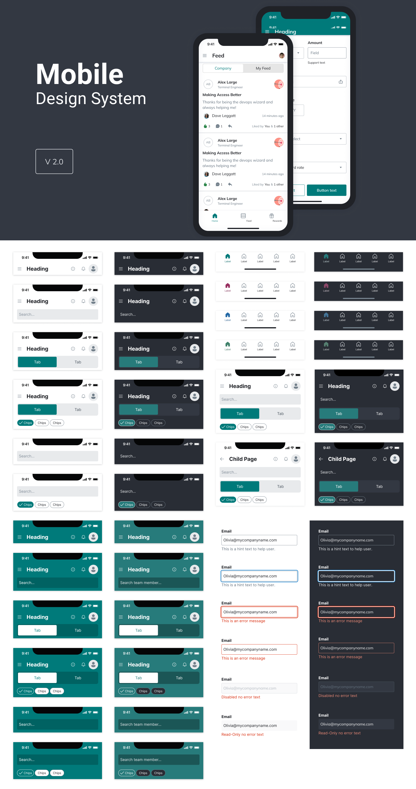

Design System Portfolio
Visual examples of my work across design systems, comprehensive documentation, and process improvements. I specialise in establishing robust design foundations, creating scalable frameworks that align design and engineering teams to deliver consistent, high-quality user experiences.
Design Principles
Project Overview
Defining a unified design philosophy to align product development.
To ensure consistency across our ecosystem, I established six core Design Principles. These serve as a strategic framework for design and engineering, ensuring every feature aligns with our commitment to high-performance and inclusive solutions.
The Challenge
A lack of shared values led to fragmented user experiences and inconsistent decision-making. We needed "North Star" principles to anchor the design process and provide clear criteria for success.
The Solution: Six Pillars of Design
I synthesized these principles to be actionable and aligned with business goals:
Key Design Principles:
AI Integration: Leveraging AI to augment capabilities and streamline complex workflows.
Innovation: Pushing boundaries to deliver forward-thinking solutions.
Clarity: Stripping complexity to ensure intuitive interactions.
Inclusiveness: Meeting WCAG standards to empower every user.
User-Centeredness: Prioritising employee needs and feedback above all else.
Consistency: Maintaining a unified functional language across all tools.
Execution & Result
Strategic Alignment: Facilitated workshops to socialise and refine these values with cross-functional leadership.
Operational Integration: Embedded principles into the Design System and QA process for consistent critiques.
Outcome: Established a cohesive culture that reduced design debt and accelerated decision-making across the board.

Design System Foundations
Foundations are the essential building blocks of a design system, providing the visual and functional "DNA" required to build cohesive interfaces. By defining these early, I ensure that both designers and developers have a shared, high-fidelity toolkit.
Colour & Accessibility: Establishing a palette that balances brand identity with strict WCAG AA/AAA compliance, ensuring readability across all user contexts.
Typography: Defining a clear type scale and hierarchy that enhances scannability and maintains professional tone across desktop and mobile.
Iconography: Curating a consistent, purposeful icon set that reduces cognitive load and provides instant visual cues for user actions.
Spacing & Grid Systems: Implementing a logical 8pt spacing system and responsive layouts to ensure visual rhythm and structural integrity across every screen.

Component Examples
Using the Atomic Design Methodology, I structured the library into a hierarchy of reusable components. This approach ensures that every element—from a single button to a complex dashboard—remains consistent and easy to maintain.
Atoms: The smallest functional units, such as buttons, input fields, and checkboxes, built to be highly configurable.
Molecules: Groups of atoms functioning together, like a search bar (input + button) or a form field with a label.
Organisms: Complex UI patterns formed by molecules, such as a navigation header, a card component, or a data table.
Templates & Pages: High-level layouts that demonstrate how these components assemble into final user-facing interfaces, ensuring visual harmony and functional reliability.

More Component Examples
Beyond the basic building blocks, I developed a suite of high-utility components designed for complex data entry and information architecture:
Selection & Feedback: Built robust radio groups, toggles, and multi-select dropdowns with integrated error states to ensure high-accuracy data entry.
Data Navigation: Designed pagination systems and breadcrumbs to help users navigate deep information architectures without losing context.
Information Overlays: Implemented standardised modals, tooltips, and toast notifications to provide timely feedback and critical alerts without disrupting the primary workflow.
Interactive Lists: Created dynamic list items and badges that scale across different screen sizes while maintaining a consistent visual hierarchy.

Built with Figma Variables
Created a multi-tier variable architecture (Primitive and Semantic) to store reusable values. This enables instant global updates to spacing, radius, and colour tokens, while allowing for seamless prototyping behaviours and theme switching (e.g., Light vs. Dark mode).

Mobile Design System
A robust, accessibility-first design system engineered for scalable mobile applications. This system provides a unified visual language across both Light and Dark modes, ensuring a seamless and high-quality user experience regardless of device settings or environmental lighting conditions.
Prioritising Accessibility
For me, accessibility is non-negotiable. I baked WCAG compliance into the core of the system, focusing on high-contrast colour palettes and clear typography to ensure visual comfort across both light and dark modes.
Building for Scale
I designed this architecture specifically to tackle design debt. By creating a library of standardised component behaviours, I can prototype new features rapidly while ensuring the handoff to developers is as seamless and error-free as possible.
The Results
This system acts as the definitive "single source of truth" for the product. I spent a lot of time refining how headers and forms behave across different surfaces—from clean whites to deep teals—to ensure that the brand feels consistent, even when the UI needs to adapt to different contexts.

DesignOps: Scaling Design Excellence
This platform serves as a Single Source of Truth (SSOT), centralising the systems and knowledge required to scale a high-performing design team.
Standardised Knowledge: Comprehensive playbooks and "how-to" guides for methodologies like journey mapping and accessibility, ensuring consistency across all workstreams.
Operational Infrastructure: A curated tool stack and asset request system to eliminate friction and maintain brand integrity.
Talent & Growth: Dedicated frameworks for career progression and management (hiring/onboarding) to foster a mature, sustainable design culture.
Community-Led: A collaborative "contribution model" that keeps documentation evolving through peer-led expertise.
The Result: Reduced operational "noise," faster onboarding, and more time for designers to focus on high-impact craft.

DesignOps Documentation Framework
I architected a comprehensive Design System portal to serve as the "single source of truth" for design and engineering teams. This framework ensures product consistency and speeds up development by providing clear, actionable guidelines for every UI element.
Component Anatomy: Deconstructed UI elements into their base parts (e.g., icons, states, scrollbars) to ensure pixel-perfect engineering implementation.
Usage Guidelines: Established "When to use" and "When not to use" logic to guide designers toward the most accessible and intuitive UX patterns.
Best Practices: Defined interaction rules and anti-patterns to prevent UI clutter and maintain a unified brand language across 20+ component categories.
Visual Examples: Provided real-world UI mocks for every component state, bridging the gap between design intent and functional code.
Impact: Created a scalable documentation structure that reduces design debt and streamlines the handoff process for the entire product ecosystem.

Manager Resources
The essential toolkit for hiring, scaling, and managing high-performing UX teams.
Talent Acquisition
UX Job Descriptions: Standardized templates for Junior, Mid-level, and Senior Designers, as well as UX Researchers, to ensure role clarity and high-quality applicants.
Interview Question Bank: A library of behavioral questions, portfolio review guides, and whiteboarding exercises to evaluate technical skill and cultural fit objectively.
Lifecycle Management
UX Onboarding: A structured roadmap covering tool access (Figma, Jira), design principles, and 30-60-90 day goals to integrate new hires quickly.
UX Offboarding: Streamlined processes for project handovers, asset archival, and leaver requests to ensure team continuity.

Core Design Principles
This dashboard proof-of-concept (POC) illustrates a robust Design System approach to theming, specifically focusing on the transition between light and dark environments while maintaining data density and visual hierarchy.
Semantic Tokens: Uses colour labels instead of fixed hex codes, allowing the UI to swap between light and dark backgrounds instantly while keeping the layout identical.
Adaptive Contrast: Colours and badges shift saturation between modes to ensure text remains legible and accessible without causing eye strain.
Elevation Mapping: Light mode uses borders for structure, while dark mode uses "lighter" surface tones to signify depth and importance.